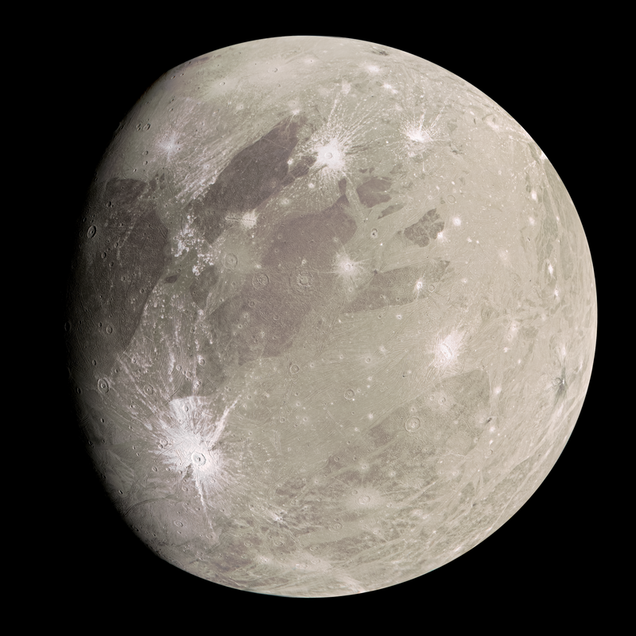
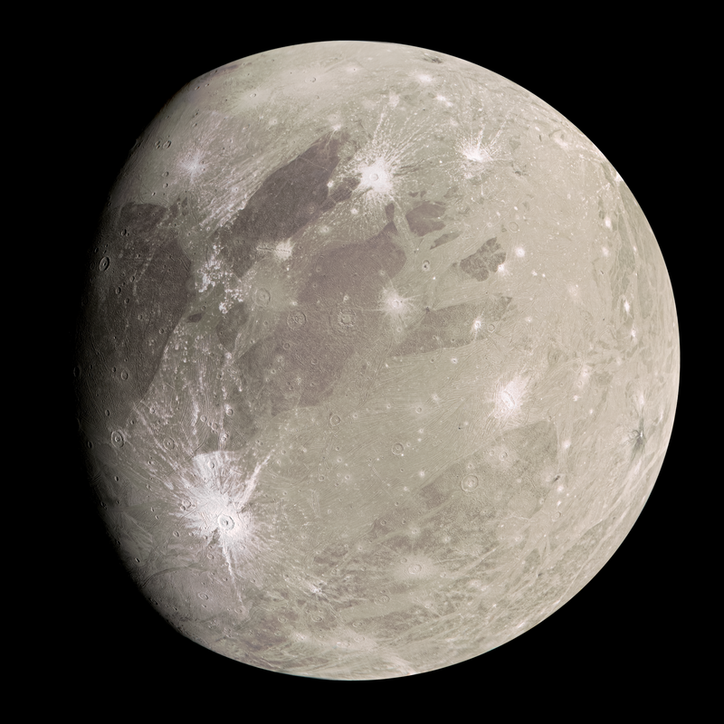

Зправа на картинках наведено приклад використання тег <map>, якщо кляцнути саме на Юпітер, або його супутник - то ми перейдомо за посиланням на їх сторінки Вікіпедії. Якщо натиснути на пусте місце - нічого не вібудеться
Приклад використання тегу <a> завжди можна побачити зверху сторінки в навігаційному меню
Юпітер та його супутники
Ганімед — супутник Юпітера
Є найбільшим супутником Юпітера, що належить до групи галілеєвих супутників. Одночасно є найбільшим супутником у Сонячній системі. Його діаметр дорівнює 5268 км, що на 2 % більше, ніж у Титана (другого за величиною супутника в Сонячній системі) і на 8 % більше, ніж у Меркурія. При цьому маса Ганімеда становить лише 45 % маси Меркурія, але серед супутників планет вона є рекордною. Ганімед перевищує Місяць за масою в 2,02 разів. Облітаючи орбіту приблизно за сім днів, Ганімед бере участь в орбітальному резонансі 1:2:4 з двома іншими супутниками Юпітера — Європою та Іо.
- Перший пункт нумерованого списку
- Другий пункт нумерованого списку
- Третій пункт нумерованого списку
- Четвертий пункт нумерованого списку
 
